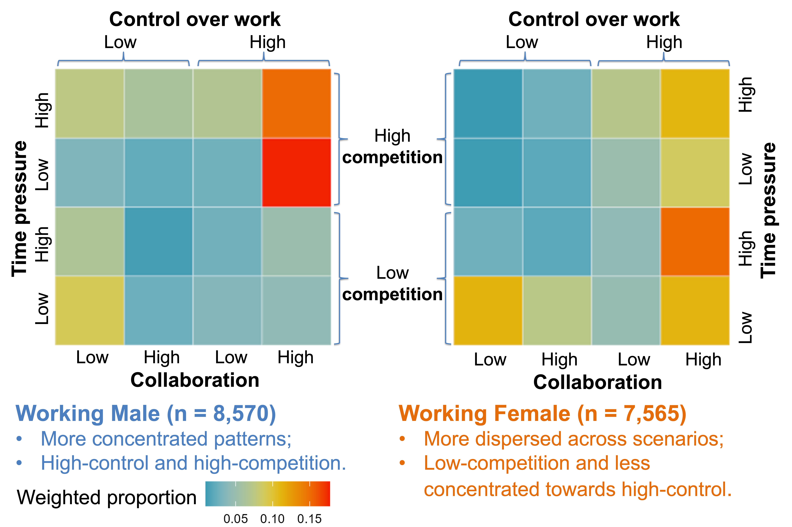
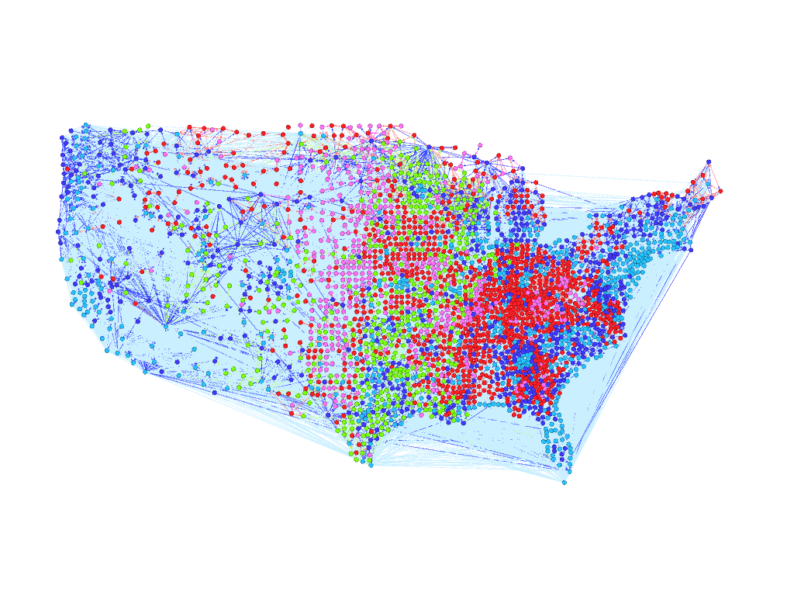

Appointment · 2026
Teaching at HKU
Alongside my Postdoctoral Fellow position at the Research Hub of Population Studies, I'm newly appointed as a Part-time lecturer in the Master program of Social Sciences in Population and Policy Analysis.
Sociologist · Social demographer
I’m Xingyun Wu, a postdoctoral fellow at the Research Hub of Population Studies, The University of Hong Kong. I study how work, family, and social structures shape people’s time, health, and opportunities.
Ph.D. in Sociology · Johns Hopkins University
Recently
Appointment · 2026
Alongside my Postdoctoral Fellow position at the Research Hub of Population Studies, I'm newly appointed as a Part-time lecturer in the Master program of Social Sciences in Population and Policy Analysis.
Publication · 2026
Coauthored research on trajectories of substance-specific preventive care and substance use, published online in the American Journal of Preventive Medicine.
Publication · 2026
Coauthored a study of well-visit attendance from mid-adolescence to young adulthood, published online in the Journal of Adolescent Health.
About my work
My dissertation examined how work, family, and personal time interact as a system, and how those patterns reproduce gender and class inequality. I bring quantitative and computational methods to nationally representative surveys, occupational data, and other complex sources.
My collaborative work spans adolescent health and preventive care, migration and environmental hazards, and student interactions with AI. Across these projects, I’m interested in the link between individual decisions and the social conditions that make them possible.
Selected research

Work & family
Exploring how women and men are embedded in different kinds of work environments.

Population & place
Mapping county-to-county migration networks and the geography of out-migration clusters.